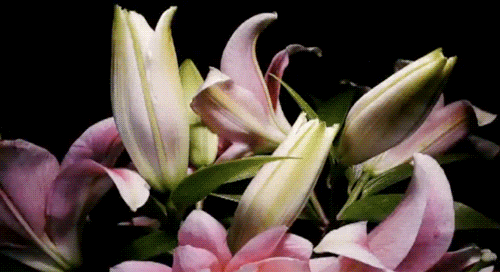
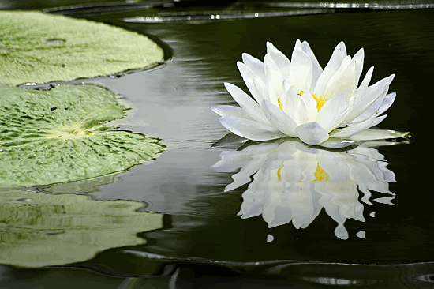
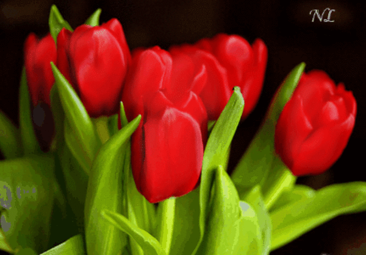
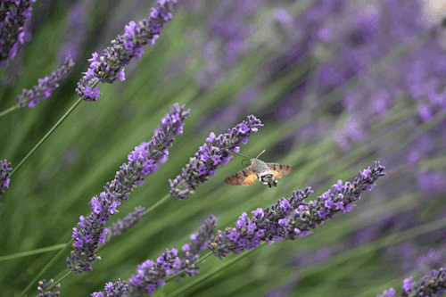
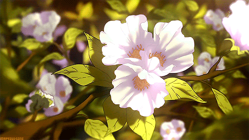
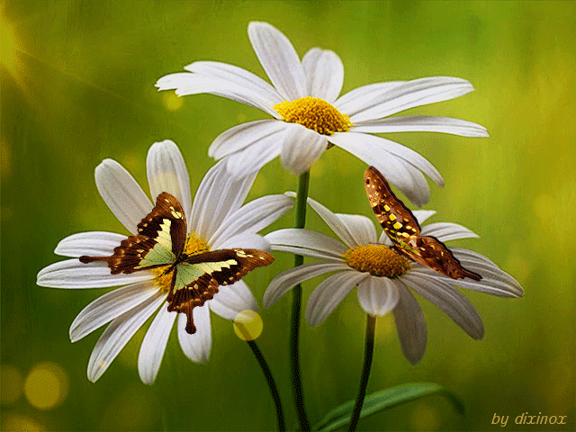
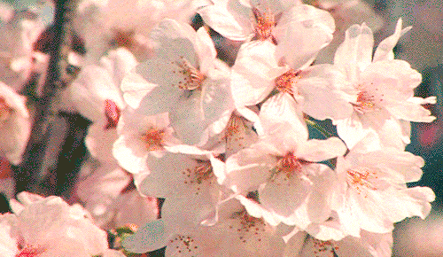

Flowers carry deep symbolism across cultures and history. They are nature's artwork, evoking emotions and conveying messages without words. Philosophically, flowers represent the fleeting beauty and impermanence of life. Each type of flower tells its own story: the rose speaks of love, the lily of purity, and the daisy of innocence. The act of giving or receiving flowers symbolizes respect, remembrance, and connection. In essence, flowers are a universal language, bridging human emotions and natural beauty.
The language of flowers has been recognized for centuries in many countries throughout Europe and Asia. They even play a large role in William Shakespeare’s works. Mythologies, folklore, sonnets, and plays of the ancient Greeks, Romans, Egyptians, and Chinese are peppered with flower and plant symbolism—and for good reason.
Following are some flowers we are offering at the moment.
Flowers:
Roses

Roses are more than just pretty blooms; they're loaded with symbolism. Red roses are the quintessential symbol of love and passion, making them a popular choice for romantic gestures. White roses denote purity and innocence, often seen at weddings. Yellow roses represent friendship and joy, spreading cheer. Pink roses indicate admiration and gratitude. Beyond their beauty, roses also symbolize confidentiality, originating from ancient times when roses were hung to denote secret meetings.
Lilies
Lilies are known for their elegance and purity. They're often associated with rebirth and motherhood, making them popular in celebrations and ceremonies. White lilies, in particular, symbolize purity and refined beauty. They're also used in funerals to represent the restored innocence of the soul of the departed. Throughout history and across cultures, lilies have remained a symbol of life's most profound and delicate moments.
Sun Flower
Sunflowers are a symbol of loyalty and adoration, known for their bright, cheerful appearance. They have a unique trait called heliotropism, where they follow the sun across the sky. This gives them an optimistic and resilient character. Sunflowers also signify longevity and vitality, making them a perfect representation of positivity and warmth.
Lotus
The lotus is deeply rooted in symbolism, especially in Eastern cultures. It represents purity and spiritual awakening as it rises from muddy waters to bloom beautifully above the surface. In Buddhism and Hinduism, the lotus signifies enlightenment and divine beauty. Its journey from the murky depths to the sunlit surface is often seen as a metaphor for the soul's progress towards clarity and enlightenment.
Tulips
Tulips are a symbol of perfect love, making them a favorite among many. Red tulips convey deep love, while yellow ones spread cheer and happiness. Purple tulips are a nod to royalty and admiration. They bloom in the spring, reminding us of renewal and the beauty of new beginnings.
Lavender
Lavender is beloved for its soothing scent and calming qualities. It symbolizes tranquility, grace, and devotion. Historically, lavender has been used for its healing properties, providing stress relief and promoting relaxation. In the language of flowers, giving lavender can represent purity and luck. Its vibrant purple blooms and aromatic presence make it a cherished addition to gardens and homes.
Jasmine
Jasmine is cherished for its delicate white blossoms and intoxicating fragrance. It's a symbol of purity, love, and sensuality. In many cultures, jasmine is used in weddings and religious ceremonies, representing divine hope and spiritual purity. Its sweet scent often evokes feelings of romance and elegance, making it a timeless favorite.
Daisies
Daisies are the embodiment of simplicity and innocence. Their fresh and unassuming look makes them a symbol of purity and new beginnings. Often associated with childhood and motherhood, daisies bring a sense of joy and nostalgia. In flower language, they can represent loyalty and trust. These cheerful blooms remind us of the beauty in life's simple moments.
Cherry Blossom
Cherry blossoms, or sakura, are an iconic symbol of spring, renewal, and the fleeting nature of life due to their short blooming period. In Japan, they hold special cultural significance, embodying the beauty of life and its transience. Viewing the blossoms, or hanami, is a tradition that brings people together to celebrate these delicate flowers and reflect on the ephemeral beauty of the world.